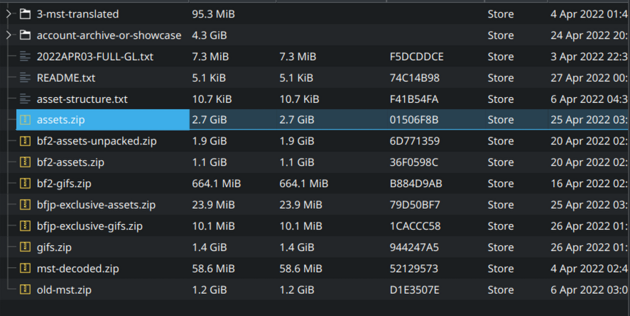
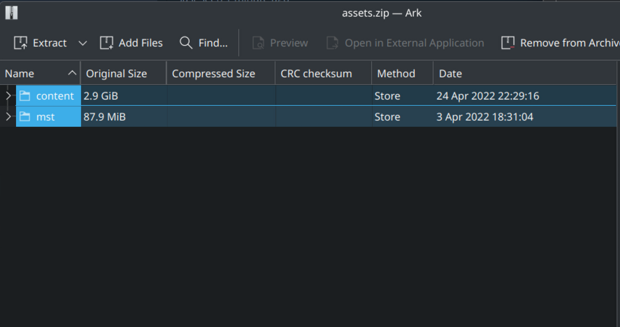
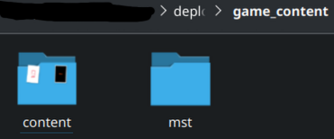
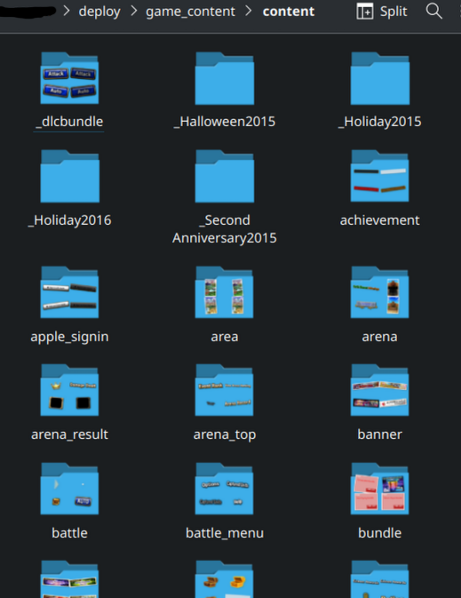
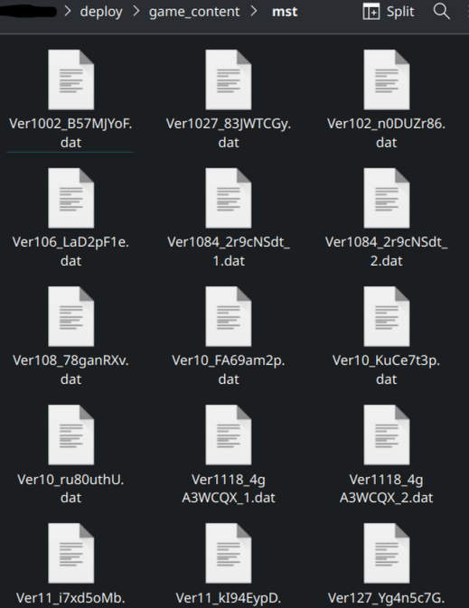

Setting Up a Development Game Server¶
This guide walks you through the chronological steps to set up a development environment for the Brave Frontier emulator server, ensuring all prerequisites are met and potential issues are avoided from the start.
Installing Visual Studio 2022 Community with C++ for Developers¶
Before cloning the server repository or setting up dependencies, install Visual Studio 2022 Community with the necessary C++ development tools to prevent common build errors, such as the missing rc.exe issue.
Steps:
Download and install Visual Studio 2022 Community from https://visualstudio.microsoft.com/downloads/. (For best results, run the installer with Admin Privileges)
During installation, select the following in the Visual Studio Installer:
Workload: “Desktop development with C++” (ensure this is checked).
Individual Components (under “Installation details”):
“Windows 10 SDK” (select the latest version, e.g., 10.0.22621.0).
“MSVC v143 - VS 2022 C++ x64/x86 build tools.” (Usually selected by default)
Click “Install while downloading” or “Modify” to apply changes (approximately 10.7 GB of additional space may be required).
Note
To verify all files are installed correctly, you can modify your Visual Studio installation at any time using the Visual Studio Installer. Open the installer, select “Modify” for Visual Studio 2022 Community, and ensure the above components are checked. This step can help confirm the presence of critical tools like rc.exe, which is necessary for building C++ projects.
Cloning the Server Repository¶
Clone the server repository to begin working on the Brave Frontier emulator server.
Steps:
To clone the server repository, run the following command in a terminal (e.g., Git Bash, Command Prompt, or PowerShell):
git clone --depth=1 https://github.com/decompfrontier/server
Note
Ensure Git is installed on your system (a base installation is all you need).
Setting Up vcpkg¶
Set up vcpkg, a C++ library manager, to handle dependencies for the server project.
Steps:
Clone the vcpkg repository and bootstrap it with metrics disabled:
In a terminal, run:
git clone https://github.com/microsoft/vcpkg.git cd vcpkg .\bootstrap-vcpkg -disableMetrics (for Windows, PowerShell) ./bootstrap-vcpkg.sh -disableMetrics (for Linux/macOS)
Windows-Only Extra Steps
On Windows, open an elevated PowerShell (Run as Administrator) and run the following command in your vcpkg directory:
.\vcpkg integrate install
Set up a permanent environment variable named
VCPKG_ROOTpointing to your vcpkg installation directory. Choose one of the following methods based on your preference:User-Level (Recommended): Sets the variable for your user account only. In a PowerShell terminal, run:
[Environment]::SetEnvironmentVariable("VCPKG_ROOT", "C:\Projects\vcpkg", "User")System-Level (Admin Required): Sets the variable for all users on the system. In an elevated PowerShell (Run as Administrator), run:
[Environment]::SetEnvironmentVariable("VCPKG_ROOT", "C:\Projects\vcpkg", "Machine")Replace
C:\Projects\vcpkgwith the actual path to your vcpkg folder (e.g.,A:\BF\vcpkgif that’s where it’s located).To verify it worked, restart your terminal and run:
$env:VCPKG_ROOTExample Output:
C:\Projects\vcpkgAlternatively, set it via the GUI:
Open sysdm.cpl (via Windows Key + R), go to “Advanced” > “Environment Variables.”
Under “User variables” (for user-level) or “System variables” (for system-level, admin required), click “New”:
Variable name:
VCPKG_ROOTVariable value: Your vcpkg path (e.g.,
C:\Projects\vcpkg).
Important
Setting VCPKG_ROOT permanently is required for this and subsequent tutorials. Ensure you choose the method (user-level or system-level) that best suits your setup to avoid issues later.
Building the Server Using CMake¶
Configure and build the server project using CMake with a preset for your operating system.
Steps:
Using CMake, select the preset Development config for XXXXX (64-bit) based on your operating system. Alternatively, use one of these commands in a terminal (e.g., Developer PowerShell for VS 2022 on Windows):
cmake --preset debug-win64(Windows)cmake --preset debug-lnx64(Linux)cmake --preset debug-osx64(macOS)
Warning
If you encounter an error (e.g., “The C++ compiler is not able to compile a simple test program” or a missing rc.exe issue), you may be missing critical components in your Visual Studio installation. To resolve this, uninstall all Visual Studio components, then return to the “Installing Visual Studio 2022 Community with C++ for Developers” section and reinstall from scratch, ensuring all required workloads and components (e.g., Windows 10 SDK, MSVC v143) are selected.
Once built, you’ll find a binary named gimuserverw in the server\standalone_frontend folder. This is your development server executable, which you can run and debug to implement new features.
Hint
At this point, if there are no errors in the console, you are free to close the admin PowerShell (and remove VCPKG_ROOT from root)
Double Click gimuserverw.vcxproj to open Visual Studio 2022 Community.
In Visual Studio 2022 Community, right click gimuserverw in the Solution Explorer pane and select Set as Startup Project.
From here, select the Debug dropdown menu in the top ribbon. Select gimuserverw Debug Properties at the bottom of the dropdown.
In this pop-up window, select Debugging under Configuration Properties, Change Configuration: dropdown to All Configurations, then change Working Directory to the server\deploy folder. Click OK to close this window, then click Apply and finally OK to return to Visual Studio 2022 Community.
Final Stretch¶
Complete the server setup by downloading and organizing assets.
Steps:
Download the assets from 21900.zip.
Extract
assets.zipfrom21900.zipas shown below:Open
assets.zipand extract thecontentandmstfolders intodeploy/game_content(if this folder doesn’t exist make it):After extraction, you should have two folders,
contentandmst, insidegame_content:The
contentfolder should contain the following assets:The
mstfolder should contain these assets:Modify the server configuration by editing the JSON files in the
systemdirectory. You can also adjust additional settings ingimuconfig.jsonand tweak Drogon-specific options inconfig.json.
Your environment is now fully set up and ready for developing the Brave Frontier emulator. You can run the server by clicking the Green Filled-in Play Button at the top of Visual Studio 2022 Community.
What’s next?¶
Important
Now that you are done with the server set-up, please make your way over to game client set-up for installation steps.
Note
If you encountered an error in set-up or a bug is preventing you from progressing in one of these tutorials, please create an Issue on the main repo. Thanks for your interest in our project!